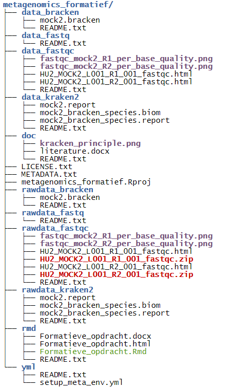

4 Guerrilla Analytics
4.0.1 Example Project
4.0.2 Root Of This Bookdown Project
## .
## ├── .gitignore
## ├── 00-METADATA.Rmd
## ├── 01_CV.Rmd
## ├── 02-GuerrillaAnalytics.Rmd
## ├── 03-CElegans.Rmd
## ├── 04-ReproducibleResearch.Rmd
## ├── data
## │ ├── CE-LIQ-FLOW-062_Tidydata.xlsx
## │ └── GuerrillaAnalytics.png
## ├── dataRaw
## │ ├── CE.LIQ.FLOW.062_Tidydata.xlsx
## │ └── GuerrillaAnalytics.png
## ├── doc
## │ └── github.placeholder
## ├── LICENSE
## ├── PortofolioBookdown.Rproj
## └── Style.css